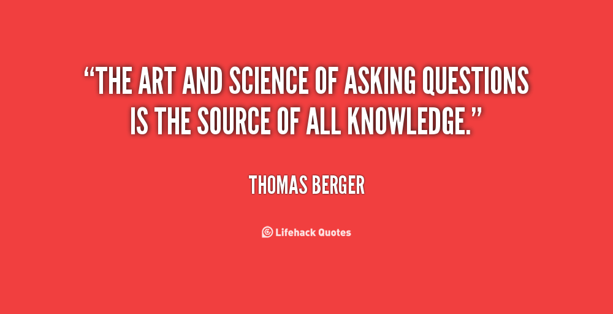

Week 9 Cultural Blog - Asking Good Questions

We've all then there. Asking questions on some forum because we can't quite solve the problem we're stuck on. I've asked several questions on stackoverflow now and I can attest that getting answers to a poorly worded question or a question which is lacking information is near impossible.
It can be frustrating reaching out to the community for help to only get snarky responses or worse no response at all. It can also be a little embarrassing to ask a question to only find the answer in another post minutes later.
It's important as developers to develop our question asking skills as they often make the difference between getting positive, quick responses to our questions that help us grow and gain knowledge. In today's post we're going to dive into the topic of asking good and correct questions.
The Golden Rule
The first and most important rule when asking questions is to visualize yourself having to answer your own question. Is there enough information available to answer the question? Is the terminology used accurate? Does it make sense?
It is always a great idea to step back after writing up a question and return to it with fresh eyes. If you just came to this question with no context could you answer the question just by the information given in the question? If there is nothing else we can learn this would be the thing to remember.
Research
Put effort into researching your problem or question. Can you find the answer on your own? Have you tried? No one will want to help you if there are already a million question and answer posts pertaining to what you want to know. It only serves to show that you are lazy if you just start asking questions without first searching and trying to answer your own question.
It's especially hard for someone to answer your questions if they pertain to basics that are easily answered by reading the documentation for the language, framework, software that you are having issues with. Educating your self by researching the topic at hand will only serve to answer your question or set you up to ask a great question. Do your research. Try to help yourself first. Then ask your question.
Vague Post Titles Suck
One of the things I hate the most when searching for answers to questions on sites like stackoverflow is vague post titles. Your question could be perfect. It could have all the needed information. It could be concise and relevant. It could be perfectly worded and formatted. But without a good title that makes sense and quickly and accurately describes the problem or question then no one will look at it. They'll skip over it without a second thought.
If you want people to view your question and attempt to help then you have to title your posts in a manner that makes it easy for them to understand what it is you need or what you are asking. Keep your titles specific and to the point. No one like titles like, "PLEASE HELP ME THIS IS HARD!".
Question Context
This may seem obvious but it happens more than you think. If your question pertains to JavaScript, don't post your question in the c++ forum. That just doesn't make sense and the only responses you'll get will be snarky and mean.
If you are not sure where to post the question then you most likely need to research the problem more. See the research section above!
State your Problem
It's not enough to just say things like, "When I do this something goes wrong". You have to state what you were expecting to happen. "I did this and I expected this but I got this instead". Stating what you are trying to accomplish can help clarify your expected goals. This saves you from getting answers that don't even pertain to what you're trying to ask.
Provide your code!
Asking a question about why your sum method doesn't work without providing your code for the sum method just sounds crazy but people do it all the time. If you really want to get mean and hateful responses to your questions then don't provide sample code.
Even if the question doesn't pertain to a specific piece of code, put together a sample of what you think it should look like so that people have a better idea of what it is that you want.
It's also important to provide all code involved with the question. If your method calls another method then provide both methods! Your problem could be in the second method and no one will know unless you provide it!
Formatting and Presentation
Make sure you check your spelling and grammar. Is your question well written? Is it easy to read or is it one big run on sentence? If people see that you took the time to write a well organize and written question then they will be more likely to try and answer your question.
Put in the effort if you want people to help.
Get Involved
If you want quality answers to your questions on the Internet then you need to be involved in the community where you are asking your questions. As you try to help others with their questions, you also learn. You also make a good impression on the community as a whole.
People are always more willing to help when they see you making an effort. Get involved and try to help. It goes a long ways towards making friends and getting help from mentors.
Resources